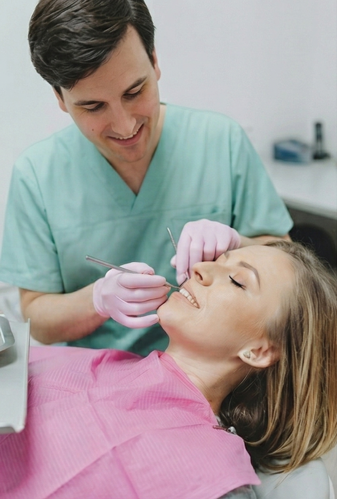

General Dental Services

Preventive dentistry plays an important role in maintaining oral health and preventing dental problems before they arise, with oral examinations and low-radiation digital imaging crucial for early detection of cavities and other dental conditions.
At Bolding Family Dentistry, we believe a proactive approach to dental care is the foundation of a lifelong, healthy smile. Call 931-388-2279 or contact us to schedule your appointment today to partner with us in maintaining your oral health for years to come.
What is Preventive Dentistry?
Preventive dentistry involves a partnership between you and your dental team to maintain a healthy mouth and stop dental problems before they start. It combines regular dental check-ups with good at-home habits like brushing and flossing. The goal is to avoid cavities, gum disease, enamel wear, and other complications by addressing potential issues early, saving you time, discomfort, and money on more extensive treatments.
Benefits of Preventive Dentistry
Partnering with us for preventive care offers numerous advantages for your overall health and well-being. Our approach is designed to keep your smile bright and healthy through every stage of life.
- Reduces your risk of developing serious dental issues
- Promotes good oral hygiene habits
- Helps detect other health concerns early
- Saves you money in the long run
Services and Procedures We Offer
Comprehensive Evaluation / Oral Examination
An oral examination is a visual inspection of the mouth, head, and neck, performed to detect abnormalities. Low radiation digital imaging allows for a more complete examination, helping the doctor to detect cavities, problems in existing dental restorations, gum and bone recession or other abnormal conditions within the mouth, head and neck area.
Dental Cleaning
A dental cleaning, also known as an oral prophylaxis, is the removal of dental plaque and tartar (calculus) from the teeth. Specialized instruments are used to gently remove these deposits without harming the teeth. First, an ultrasonic device that emits vibrations and is cooled by water is used to loosen larger pieces of tartar. Next, hand tools are used to manually remove smaller deposits and smooth the tooth surfaces. Once all the tooth surfaces have been cleaned of tartar and plaque, the teeth are polished.
Dental Sealants
Dental sealants are made of a safe resin material which is applied to the surfaces of teeth (commonly permanent molars) to prevent cavities. The sealant material fills in the crevices of a tooth and "seals" off the tooth from cavity-causing agents like food and plaque. The teeth are prepared for the sealant application and the sealant is painted directly onto the chewing surface of each tooth and then hardens. Sealants are applied in one visit.
Fluoride Treatment
Fluoride is a natural substance that helps strengthen teeth and prevent decay. Fluoride treatments are administered at this office as an important component of pediatric dental treatment. The fluoride is applied to the teeth in a gel, foam, or varnish form.
Custom Oral Appliances
Our office can fabricate custom oral appliances that can protect your teeth and gums during sports, alleviate sleep apnea symptoms to provide an open airway while you sleep, or relieve stress on the temporomandibular joint caused by clenching or grinding of the teeth.
Scaling and Root Planing
Scaling and root planing is a non-surgical procedure used to treat gum disease. During the scaling process, specialized dental instruments are used to remove dental plaque and calculus from beneath the gums. Planing is the procedure used to smooth the tooth roots after the scaling process. Root planing helps the gums heal and reattach themselves to a cleaner and smoother root surface.
Why Choose Bolding Family Dentistry?
Choosing the right dental partner is essential for your family's health. At Bolding Family Dentistry, we are committed to providing exceptional, personalized care in a comfortable and welcoming environment. We treat our patients like family, ensuring you feel at ease from the moment you walk through our doors. Our team uses modern dental technology to deliver precise, efficient, and gentle treatments for a superior patient experience.
To learn more, call 931-388-2279 or contact us today to schedule an appointment.
Frequently Asked Questions About Preventive Dentistry
How often should I see the dentist for a preventive appointment?
For most patients, we recommend visiting us for a professional cleaning and exam every six months. Depending on your specific oral health needs, we may suggest a different schedule to best protect your smile.
Are dental X-rays necessary at every visit?
No, dental X-rays are not typically needed at every single visit. We recommend them based on your age, risk for disease, and any symptoms you may be experiencing. They are a vital tool for detecting issues not visible during a standard exam, such as decay between teeth or problems below the gumline.
At what age should my child first see a dentist?
The American Academy of Pediatric Dentistry recommends a child's first dental visit should occur by their first birthday or when their first tooth appears. Early visits help your child become comfortable with the dental office and allow us to provide guidance for a lifetime of healthy habits.
Is preventive dentistry covered by insurance?
Most dental insurance plans provide excellent coverage for preventive services, often covering cleanings, exams, and routine X-rays at a high percentage or even in full. We can help you understand and maximize your benefits.
What is the difference between plaque and tartar?
Plaque is a soft, sticky film of bacteria that constantly forms on your teeth. When plaque is not removed by brushing and flossing, it hardens into tartar (or calculus), which can only be removed by a dental professional during a cleaning.